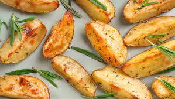

Potatos

Description
I got this baked potatos recipes from my mother in law.
It's the best potatos you will ever make, Enjoy :-)
Ingredients
- Small 'dod moshe' potatos
- Olive oil
- Dry basil
- Dry oregano
- Garlic crystals
- Black pepper
- Cooking salt
Steps
- Cut the potatos in half and put it in a large bowl
- Add the oil and spices generously and mix well
- Bake it in the oven at 220 C until they get a good crust
- Beteaovn!